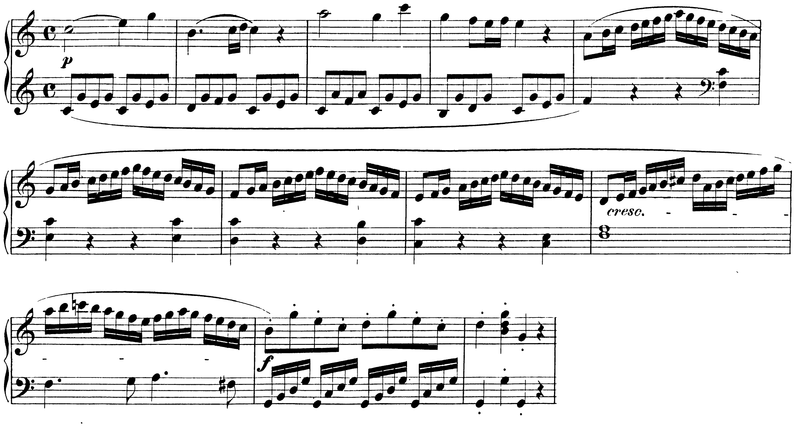

Due tonalità e due temi: l’esposizione di una forma sonata parte dalla tonica e arriva alla dominante, e la transizione è il viaggio fra le due.
Lezione di due ore. Seconda ora: Dettato ritmico-melodico con emiolia cadenzale. I compiti per casa sono alla fine.
B5Architettura della forma sonata; il gruppo tematico principale; la transizione; il gruppo tematico secondario, 4° anno, lezioni 5–9, pp. 154–169
La forma sonata ha tre sezioni. L’esposizione presenta il primo tema (o gruppo tematico) nella tonica, una transizione che modula, il secondo tema nella dominante (nel relativo maggiore, se il pezzo è minore) e una chiusa; di solito si ripete. Lo sviluppo elabora i temi attraverso varie tonalità e prepara il ritorno. La ripresa ripresenta l’esposizione, con il secondo tema nella tonica.
| sezione | che cosa | tonalità |
|---|---|---|
| esposizione | primo tema, transizione, secondo tema, chiusa | I → V |
| sviluppo | frammenti dei temi, progressioni, modulazioni | tonalità vicine e lontane; alla fine il V |
| ripresa | primo tema, transizione modificata, secondo tema, chiusa | I → I |
Due ascolti dell’esposizione con la tabella davanti. Si segnano: l’inizio del secondo tema (che cosa fa la mano sinistra); la chiusa; il ritornello. Al secondo ascolto: quale figura del primo tema (o della transizione) ritorna nella chiusa.

Il primo tema (bb. 1–4) sta tutto in do maggiore, sopra il basso albertino: I, V43, I, IV64, I, V6, I. La transizione comincia alla b. 5: quattro scale di semicrome, ognuna un grado sotto la precedente (la, sol, fa, mi), sopra il basso che scende fa–mi–re–do: una progressione. Alla b. 9 il do♯ e alla b. 10 il fa♯ del basso portano fuori dalla tonica; le bb. 11–12 si fermano sul sol. Subito dopo il secondo tema è in sol maggiore, la dominante.
Il canone della lezione 4 dell’unità 8, più lungo: all’ottava, a una battuta di distanza. Copia la proposta nella risposta, un’ottava sotto, battuta per battuta, fino alla b. 5. Il resto è il compito per casa.
Primo tema in tonica, transizione che modula, secondo tema in dominante, chiusa.
Nel K 545 una progressione di scale, poi le alterazioni della nuova tonalità.
Elaborazione e ritorno: nella ripresa il secondo tema è in tonica.
Mercoledì 28/4 (prima ora), ora 84: il dettato ritmico-melodico con emiolia cadenzale. La lezione si chiude con il solfeggio parlato, cantato e ritmico.
Nel dettato l’emiolia si riconosce perché il passo cambia prima della cadenza: tre suoni lunghi al posto di due battute. Si scrive restando in 3/4, con la legatura a cavallo della stanghetta.
Si sente: tre suoni di una minima nelle due battute prima della cadenza, come una battuta di 3/2. Si scrive: due battute di 3/4, con una minima, una minima legata a cavallo della stanghetta (una semiminima più una semiminima) e una minima. Il metro scritto non cambia mai.
1. Il metro (si batte in tre) e la cadenza finale. 2. Il ritmo, battuta per battuta; dove la mano non trova più il primo tempo, si cercano tre suoni lunghi: è l’emiolia. 3. Le note dei tempi forti, cantate a mezza voce, senza tastiera. 4. Le altre note, per grado o per salto a partire da quelle.
Scrivere una battuta di 3/2 in mezzo al 3/4. Dimenticare la legatura: la seconda minima diventa due note. Spostare la stanghetta: le battute devono restare tutte di tre tempi.
Si danno la tonalità, il metro e la prima nota. Quattro ascolti con la procedura. Alla correzione si segnano gli errori per tipo: ritmo (e legatura), nota, alterazione.
Un dettato ritmico-melodico di otto battute, sul foglio con un rigo vuoto: brutta e bella copia. Le indicazioni che servono le dà il docente prima del primo ascolto. La procedura è quella del dettato di esercitazione.
Prima di consegnare: ogni battuta di tre tempi; le legature scritte; ogni nota alterata con la sua alterazione.
Tre suoni lunghi prima della cadenza: due battute sentite come una.
Il 3/4 resta: minima, minima legata a cavallo della stanghetta, minima.
Il metro, il ritmo, le note forti, le altre note.
Mercoledì 28/4 (seconda ora), ora 85: il primo tema come sentence, e la forma sonata nell’op. 18 n. 1 di Beethoven. La lezione si chiude con il solfeggio parlato, cantato e ritmico.
Compiti per la prossima volta
Sul basso dato componi la voce superiore di una frase in 3/4, in re minore. Alle bb. 6–7 l’emiolia (tre minime, la seconda legata a cavallo della stanghetta); la b. 8 chiude sulla tonica. La sensibile do♯ sale al re.
Sul quaderno, a matita. La foto del lavoro finito va su Classroom. Nel Workbook: apri l’esercizio C3-U11-L6-01 ↗
Compiti per la prossima volta
n. 728 e n. 729 parlato · n. 730 e n. 731 cantato · n. 732 e n. 733 ritmico
Ogni pezzo a tempo, senza fermarti: il parlato a nomi, il cantato prendendo il primo suono dalla tastiera, il ritmico battendo la pulsazione.
Scrivi la linea del basso sul quaderno, in chiave di basso: otto battute in 2/4, la maggiore. Il primo suono è do♯. Prima il riferimento, poi tutto due volte, ogni coppia di battute due volte, il collegamento 1–4, 3–6 e 5–8, e tutto per controllare.
Il riferimento: accordo di tonica e primo suono
Il dettato · otto battute
Le sezioni (riferimento, tutto, le coppie, il collegamento) si ascoltano una per una e si ripetono quanto serve; le fasi fanno la procedura della classe, con gli annunci e le pause, da qualunque punto.
Sul quaderno scrivi in testa la sigla C3-D-U11-L6. Si corregge all’inizio della prossima lezione.
Compiti per la prossima volta
Scrivi un contrappunto di quarta specie (la sincope) sopra il canto fermo, in modo ionico (finale do): otto battute. Comincia su una consonanza perfetta, alla cadenza la sensibile sale alla finale, niente quinte e ottave consecutive.
Sul quaderno, con la sigla C3-CP-U11-L6 in testa; la foto va su Classroom.
Realizza a quattro parti il basso senza numeri: otto battute in 4/4, mi minore. Trova tu l’accordo di ogni nota (la regola dell’ottava è il punto di partenza) e scrivilo sotto; poi il soprano, poi le voci interne. Accordi che puoi usare: anche le dominanti secondarie.
Sul quaderno, con la sigla C3-BD-U11-L6 in testa; la foto va su Classroom.
Armonizza a quattro parti il canto dato: otto battute in 4/4, do maggiore. Prima le cadenze, poi il basso per intero, e solo alla fine contralto e tenore. Accordi che puoi usare: anche le dominanti secondarie.
Sul quaderno, con la sigla C3-CD-U11-L6 in testa; la foto va su Classroom.
Scritto: Una frase in minore di otto battute con l’emiolia cadenzale (Workbook, esercizio C3-U11-L6-01), sul quaderno; la foto va su Classroom. Solfeggio dal quaderno di lettura: parlato n. 728, 729; cantato n. 730, 731; ritmico n. 732, 733 (a tempo, senza fermarsi). Dettato C3-D-U11-L6 dalla pagina della lezione (sezioni da ascoltare, o le fasi della procedura guidata), sul quaderno con la sigla. Contrappunto di quarta specie sul canto fermo (C3-CP-U11-L6). Basso senza numeri da realizzare a quattro parti (C3-BD-U11-L6). Canto dato da armonizzare a quattro parti (C3-CD-U11-L6).
Il dettato di oggi
Scrivi la melodia sul quaderno, in chiave di violino: otto battute in 3/4, re maggiore. Il primo suono è la. Prima il riferimento, poi tutto due volte, ogni coppia di battute due volte, il collegamento, e tutto per controllare.
Il riferimento: accordo di tonica e primo suono
Il dettato · otto battute
Le sezioni si ascoltano una per una e si ripetono quanto serve; le fasi rifanno la procedura della classe, con gli annunci e le pause, da qualunque punto. Per chi era assente, e per chi vuole rifarlo: sul quaderno scrivi in testa la sigla C3-DV-84.
In classe
A nomi, a tempo, con la mano che batte. Chi si ferma riparte dalla battuta dopo.
Apri il n. 724 nel quaderno di lettura ↗ chiave di tenore · 4/4
In classe
Si prende il tono dalla tastiera, si canta insieme; poi a gruppi.
Apri il n. 725 nel quaderno di lettura ↗ chiave di violino · 6/8 · sol maggiore
Apri il n. 726 nel quaderno di lettura ↗ chiave di violino · 6/8 · re maggiore
In classe
Tutti insieme, battendo la pulsazione. Poi a file, due battute a testa.